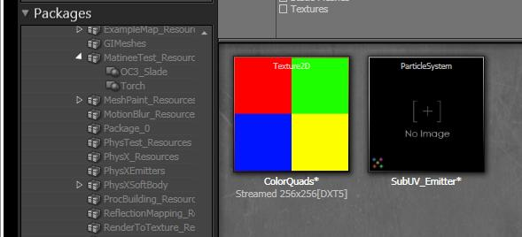

UDN
Search public documentation:
ParticleSpriteSubUVEmitterTutorialKR
English Translation
日本語訳
中国翻译
Interested in the Unreal Engine?
Visit the Unreal Technology site.
Looking for jobs and company info?
Check out the Epic games site.
Questions about support via UDN?
Contact the UDN Staff
日本語訳
中国翻译
Interested in the Unreal Engine?
Visit the Unreal Technology site.
Looking for jobs and company info?
Check out the Epic games site.
Questions about support via UDN?
Contact the UDN Staff
파티클 SubUV 튜토리얼
문서 변경내역: Scott Sherman 작성. Steven Haines 업데이트. 홍성진 번역.
개요
새 파티클 시스템 생성
 다음과 같이 정보를 입력합니다.
다음과 같이 정보를 입력합니다.
| Package | MyEmitters |
| Group | |
| Name | SubUV_Emitter |
| Factory | 파티클 시스템에 있을 겁니다. |

텍스처 가져오기

ParticleSubUV 머티리얼 생성
 에디터에 다음과 같은 머티리얼 표현식 위젯이 나타납니다.
에디터에 다음과 같은 머티리얼 표현식 위젯이 나타납니다.
 다음 단계는 SubUV의 표현식을 머티리얼의 출력에 연결하는 것입니다. 이 경우에는 아래 그림에서처럼 RGB 출력을 Emissive 입력에, Alpha 출력을 Opacity에 연결하면 됩니다.
다음 단계는 SubUV의 표현식을 머티리얼의 출력에 연결하는 것입니다. 이 경우에는 아래 그림에서처럼 RGB 출력을 Emissive 입력에, Alpha 출력을 Opacity에 연결하면 됩니다.
 파티클을 뿌리고자 하는 방식에 따라 머티리얼의 블렌드 모드를 설정할 수 있습니다. 이 튜토리얼에서는 "BLEND_Translucent"를 사용할 것이므로 아래의 스크린샷에서와 같이 선택합니다.
파티클을 뿌리고자 하는 방식에 따라 머티리얼의 블렌드 모드를 설정할 수 있습니다. 이 튜토리얼에서는 "BLEND_Translucent"를 사용할 것이므로 아래의 스크린샷에서와 같이 선택합니다.

지금까지의 작업 결과

파티클 SubUV 이미터 작성
 캐스케이드가 열리면 콘텐츠 브라우저에서 SubUV_Mat을 선택하고 '이미터 바'를 오른 클릭하여 아래와 같이 "New ParticleSpriteEmitter"를 선택합니다.
캐스케이드가 열리면 콘텐츠 브라우저에서 SubUV_Mat을 선택하고 '이미터 바'를 오른 클릭하여 아래와 같이 "New ParticleSpriteEmitter"를 선택합니다.
 이제 캐스케이드에 다음과 같이 미리 보기 창에 새로 작성된 이미터를 표시하는 창이 보일 것입니다:
이제 캐스케이드에 다음과 같이 미리 보기 창에 새로 작성된 이미터를 표시하는 창이 보일 것입니다:
 'Required' 클래스에는 SubUV와 관련된 설정들이 있습니다: InterpolationMethod, 그리고 텍스처에 대한 가로 세로 서브이미지 수 입니다.
'Required' 클래스에는 SubUV와 관련된 설정들이 있습니다: InterpolationMethod, 그리고 텍스처에 대한 가로 세로 서브이미지 수 입니다.

SubUV 파라미터 셋업하기
| SubImages_Horizontal | 2 |
| SubImages_Vertical | 2 |
| InterpolationMethod | PSSUV_Linear |
 보다시피 이미터는 제공된 텍스처에 대한 '첫 번째' 서브 이미지를 선택하고 있습니다. 기본 서브 이미지의 인덱스가 상수 0이기 때문입니다.
보다시피 이미터는 제공된 텍스처에 대한 '첫 번째' 서브 이미지를 선택하고 있습니다. 기본 서브 이미지의 인덱스가 상수 0이기 때문입니다.
서브 이미지 선택 설정하기
 이미터의 SubImage Index 모듈에서 작은 초록색 '그래프 버튼'을 클릭하여 커브 에디터에 커브를 추가합니다.
이미터의 SubImage Index 모듈에서 작은 초록색 '그래프 버튼'을 클릭하여 커브 에디터에 커브를 추가합니다.
 다음 증가치를 갖는 데이터 포인트로 커브를 추가합니다:
다음 증가치를 갖는 데이터 포인트로 커브를 추가합니다:
| 시간 | 값 |
| 0.00 | 0.00 |
| 0.75 | 3.01 |
 MyEmitter 패키지는 여기서 받을 수 있습니다.
MyEmitter 패키지는 여기서 받을 수 있습니다.